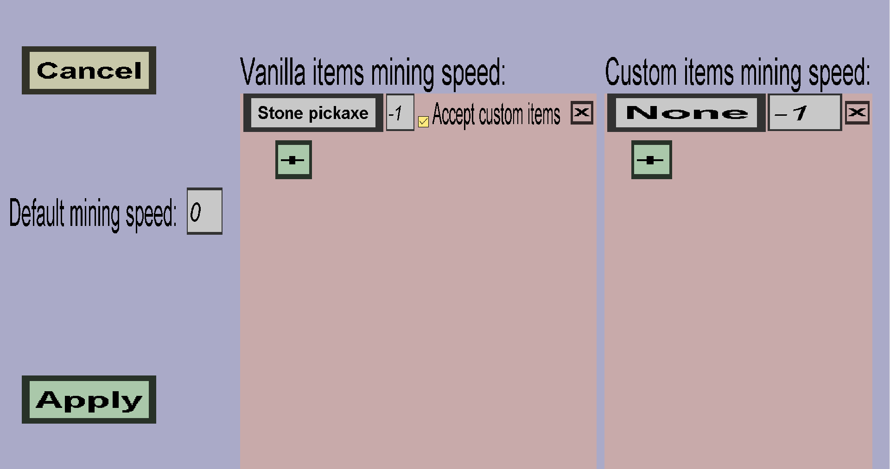

The mining speed menu can be used to configure how much time it takes to break a custom block using a given tool. It should look like this:
The mining speed value must be an integer between -4 and 25, where a value of -4 makes the block nearly unbreakable, and a value of 25 lets the player break it instantly. When you choose a negative value, the player will get mining fatique while breaking the block. When you choose a positive value, the player will get haste while breaking the block. When the value is 0, the player won't get any potion effects. The value directly corresponds to the level of fatique/haste: using value = -3 will give players mining fatique 3 and using value = 10 will give players haste 10. An impression of the resulting block break times are given below:
You can configure the mining speed per item. (For instance, you can give pickaxes higher mining speed values.)
The default mining speed (on the left) is the mining speed value that will be used when none of the items on either of the lists on the right are used.
The middle column is designated to the mining speed for vanilla minecraft items. Using the green + button, you can add an entry for any vanilla minecraft item. Each entry has a vanilla item type, a value (the text field), and a checkbox to determine whether custom items with that vanilla item type are also allowed. If a player tries to break the block with an item in the list, the mining speed value for that item will be used instead of the default mining speed. An example is shown below:

The right column is designated to the mining speed for custom items. This is equivalent to the vanilla item mining speed column, except that it is for custom items rather than vanilla items.